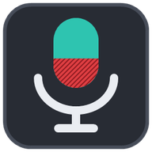

Broken Microphone
Android uygulaması · telefonun, bilgisayarın mikrofonu
Son sürüm, doğrudan GitHub'dan (~130 KB). Reklam yok, hesap yok, internete veri göndermez. Android 7.0 ve üstü.
Kurulum
- Yukarıdaki APK'yı indir'e dokun ve dosyayı aç.
- Android "bilinmeyen uygulamalar" izni isterse sadece tarayıcına ver. Kurduktan sonra bu izni kapatabilirsin.
- Uygulamayı aç, dilini seç ve QR kodu okut'a dokun.
- Bilgisayarda Broken Microphone'u aç ve penceredeki QR kodu çerçeveye getir. Uygulama bağlanır; mikrofona dokunarak başlatır ve durdurursun.
iPhone ve iPad için uygulama gerekmez: bilgisayardaki QR kodu okutunca açılan sayfa yeter.
İndirme %100'de kaldıysa
- Bildirimlere bak. Android, APK dosyalarında "Bu dosya türü cihazınıza zarar verebilir" diye sorar ve sen Yine de indir'e dokunana kadar indirme %100'de bekler. Uyarı ekranın altında ya da bildirim çubuğunda olabilir.
- Sayfa bir uygulamanın içinde mi açıldı? QR okuyucu, WhatsApp, Instagram gibi uygulamaların kendi tarayıcıları dosya indiremez. Sağ üstteki menüden Chrome'da aç'a dokun ve tekrar dene.
- Dosya indi ama açılmıyorsa: Dosyalar → İndirilenler'den BrokenMicrophone.apk'ya dokun. Android tarayıcın için "bilinmeyen uygulamaları yükleme" izni ister; ver, kurduktan sonra kapatabilirsin.
- Dosya küçüktür (~95 KB). Hazır kütüphane ve reklam içermez, o yüzden saniyesinde iner.
Güvenlik
- Sadece aynı ağdaki bilgisayara bağlanır; internetteki bir adres için bağlantı açılmaz ya da açıkça onay ister.
- Ses TLS ile şifreli gider. Bilgisayarın sertifikası ilk bağlantıda hatırlanır; değişirse uygulama bağlanmaz ve sorar.
- Bağlantı anahtarı telefonda Android Keystore ile şifreli saklanır; yedeklere ve cihaz aktarımına girmez.
- Bir web sitesi uygulamayı açsa bile sen onaylamadan mikrofon açılmaz. Üstte başka bir pencere varken dokunuşlar yok sayılır.
- İzinler: mikrofon, kamera (sadece QR okurken; görüntü telefonda çözülür, gönderilmez), bildirim, ağ, Bluetooth (kulaklık mikrofonu için). Konum, kişiler, dosyalar yok.
- Güncellemeleri kendisi denetler: GitHub'daki son sürüm numarasına bakar (Ayarlar'dan kapatılabilir), yeni sürümü yine GitHub'dan, aynı imzayla indirir.
İndirdiğin dosyayı doğrulamak için: sürümdeki SHA256SUMS.txt dosyasındaki özetle karşılaştır. Uygulamanın imza sertifikası (SHA-256):
B7:4F:9A:B8:C1:88:71:79:DF:E2:0B:B0:CF:3B:9E:A4:AA:20:D8:F5:BB:90:39:44:12:E6:BD:DE:87:19:B3:27English
Tap APK'yı indir (Download the APK) above; it comes straight from GitHub. If Android asks to allow unknown apps, allow it only for your browser and turn it off afterwards. Then open the app, pick your language, tap Scan QR code and point it at the QR code in Broken Microphone on your computer.
The app only connects to computers on your own network (anything else is refused or needs your explicit confirmation), encrypts audio with TLS and pins the computer's certificate, stores the connection key encrypted with Android Keystore, keeps it out of backups, and ignores touches while another window covers it. iPhone and iPad don't need an app: the page that opens from the QR code is enough.
Signing certificate SHA-256: see above. Checksums: SHA256SUMS.txt in each release.